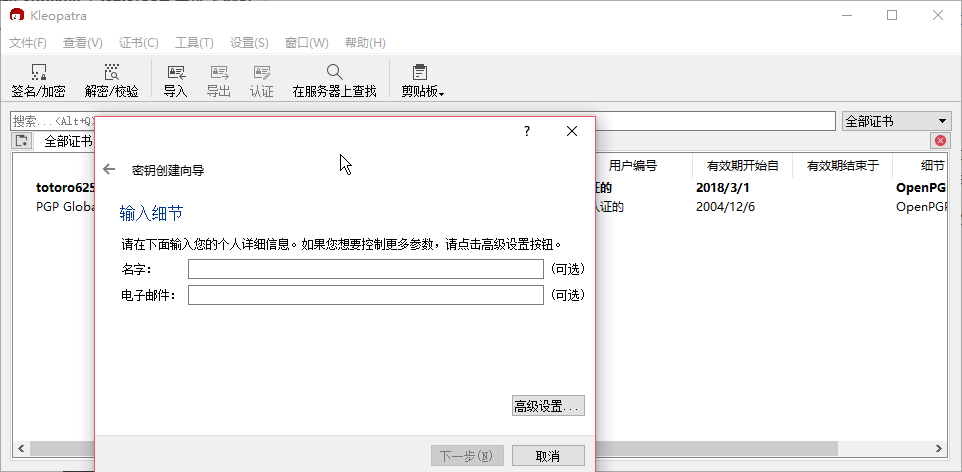

觊觎 yubico 公司的 yubikey 很久了，最近又由于 lastpass 主密钥过长不方便的原因，索性买了一个回来研究。
我在购买前有了解到这是一个略微高端的玩具，国内外的教程都很少，而且新老教程都有些不尽准确的地方。yubikey 在设计使用上对于 MAC OS 以及 Linux 系统比较友好，而在 Windows 上的使用范围就相对小了很多，不过如果是仅仅用做固定密码输入器的话，也是够用的。
介绍
我先后查阅了官方的 yubikey 使用手册 (点此阅读) ，以及几乎是中文能搜索到的最早的博文（2012年）入手yubikey,一点小心得 和他的后续 YubiKey 4 简介与配置 ，还有康哥的 Yubikey OpenPGP Card 略高级折腾手记 ，赵一开的YubiKey入手和介绍、Yubikey使用一年总结 ，折腾录的二次验证神器yubikey ，还有可能是最好的 Yubikey + GPG/SSH 智能卡教程 。知乎专栏的把 Gpg4win 的 gpg-agent 转发到 WSL 中、配置新版 GPG SSH 认证代理 。感觉我还是能够驾驭的住这个精致的玩具的

首先说一下功能，YubiKey 4 可以同时工作在三种模式:
- 传统键盘设备模式: Yubico OTP, Challenge-Response, 静态密码, HOTP 等, 这个模式又有两个slot，对应于短按和长按操作，生成两种密码
- Smartcard 模式: OpenPGP card 和 PIV card，可以用来安全地保存 RSA 私钥
- U2F 模式: 一种两步认证协议，Google, Dropbox, Github 等网站都支持
@BlahGeek 之前入手 YubiKey 4 时写得 blog 描述得更详细一些，可以参考。
我的使用
而我日常主要使用的是 windows ，有时会用 WSL ，偶尔会用 Linux ，所以我主要使用到的功能则是静态密码模式以及 Smartcard 模式中的 OpenPGP card 来安全地保存 RSA 私钥。官网有一份 Windows 下如何使用的说明
根据教程我安装的 YubiKey for Windows Hello 总是不太好用，一方面可能是我的笔记本太过老旧的原因，另一方面可能是我的电脑没有内置TPM(可信赖平台模块)的原因，新的电脑（需要win 10）应该都可以支持。
Windows锁屏解锁
而针对 Windows 用户还有一个替代程序 yubico windows login tool (下载页)，可以适用于全部版本的 Windows 。我们只需要安装完成后重启电脑并打开管理程序即可食用，更加便捷的代价是他不能够在开机的时候使用，仅仅只能用作系统锁定时的解锁，远不如 YubiKey for Windows Hello 好用。

按理来说 yubikey 可以运行在 Smartcard 模式上为我在开机过程中解锁系统，但是我的 Smartcard 证书始终无法导入系统，可能是我的教育版 win10 有哪些地方没有设置好。
静态密码输入
另外一个我最常使用的就是传统键盘模式了，而且我用的还是最为人诟病的静态密码模式，既短按和长按分别输出两段预设好的密码。这是相当不安全的，但是由于是 windows 上使用，我也没什么应用可以使用其他高级的安全模式，反倒是总有一些人喜欢在我输入密码的时候偷窥我的密码，保存好两段静态密码再通过密码登入 lastpass 复制各种密码倒成了我的一个更加安全的手段。静态密码不安全无非在于，yubikey 离身后直接被熟人套取密码，但要知道你有两个静态密码，你就可以有很多种组合，例如A、B、AB、BA，以及在此基础上添加字符、删减字符，这样可以使得你的主密码更加安全。当然，做了这么多工作，最重要的还是 yubikey 尽可能的不要离身，这样静态密码才能安全。
在使用传统键盘模式前需要下载一个 YubiKey Personalization Tool 来管理你的 yubikey，MAC 用户与 Linux 用户则只需要通过包管理器安装 yubikey-personalization yubikey-personalization-gui 即可食用了。
打开程序，选择静态密码模式中的Scan Code，即可设置短按和长按分别输入的预设密码了

选择一个 Configuration Slot ，#1 是短按 #2 是长按
再把键盘模式选择一下，目前普遍是 US Keyboard
之后就可以输入你想要设置的静态密码了，可以根据需要选择静态密码输入完成之后是否需要在输入一个回车键，简化我们的输入过程
写好之后选择 Write Configuration 写入 yubikey
第一次写入需要保存一个历史写入文件，选择一个安全的地方放置一下即可

就这样，我们的 yubikey 就具备了基础的输入密码的功能了，经过测试，yubikey 的密码输入功能在任何可以接收键盘信号的设备上都是可以使用的，比如安卓手机。这样我就可以通过 yubikey 来输入我的 lastpass ，即使是在手机上也无需输入一连串超长的安全密码了。
OpenPGP card
yubikey 工作在 Smartcard 模式上时可以支持 MAC OS 的 PIV card 解锁，而我等没有 MAC 的用户就用用 OpenPGP card 好了。
在接触 yubikey 之前我是没有接触过 OpenPGP 的，根据我看到的几篇博文，打都告诉我不要把主密钥丢在 yubikey 里面，否则永远都取不出来了。当然丢 yubikey 里面会更加的安全，但是如果丢了就真的丢了。。。
对于那些真正的需要安全的人而言，主密钥是肯定得丢在 yubikey 中的，但是就我这样丢三落四的人，还是算了吧。
作为一个 Windows 用户需要安装一个 gpg4win 来使得 Windows 能够支持在 Powershell 中运行 gpg 命令，这个时候你说 WSL ？抱歉，不加以设置，你在 WSL 中是看不到 yubikey 的
参考把 Gpg4win 的 gpg-agent 转发到 WSL 中
我是没读懂也没有设置成功。。。。。。
不过我在 Windows 下的 Powershell 中一样可以使用 yubikey 啊，我把主密钥导出备份之后，再将主密钥移动到 yubikey 中，使得电脑上每次使用主密钥的时候都需要我去插入 yubikey 才可以使用
而根据很多人说的，主密钥删除而单独使用子密钥的情况我却从未遇到过，测试了很多次都失败了，无法仅仅导出子密钥后单独使用子密钥，可能是我哪里设置的不正确的原因。
安卓手机上也有一个名为：OpenKeychain:Easy PGP 的程序，同样支持 yubikey 的使用。
当你安装过 gpg4win 软件之后，我们打开它，根据向导生成一份属于自己的 OpenPGP 证书，之后一定要导出绝密密钥，否则会在转移密钥到 yubikey 的过程中，主密钥再也取不出来了。我们可以多尝试几次，只要不把公钥证书上传到托管服务器，我们在本地都是可以随意删除的。

之后的更加复杂的操作我们将在 PowerShell 上进行
首先你需要设置一下 YubiKey。
1 | gpg --card-edit # 打开设置 |
admin 打开管理模式 help 查看帮助 passwd 设置 PIN, Admin PIN 和 Reset Code
PIN 的默认值是 123456，Admin PIN 的默认值是 12345678
需要先进入 admin 模式后，help 命令才会有更多的选项，passwd 才可以设置更多的密码

需要注意的是
- PIN 码是平时最常用的密码，如果输错三次就会被锁定，需要使用 Reset Code 来解锁，Reset Code 输错三次，只能物理重置。
- Admin PIN 是管理卡信息(如添加密钥、修改密码)使用的密码，不能短于 8 位，输错三次则管理功能被锁定，只能物理重置。 记住，千万不要在需要输入 Admin PIN 的时候输入短于 8 位的密码，这样会直接锁定
你可以继续设置一些其他信息，比如持卡人姓名、公钥的 URL 等等，也可以下次再弄。
建议将公钥的 URL 设置一下，这样插入新的电脑时可以通过 fetch 命令直接获取 yubikey 中密钥的公钥了
操作完后我们使用 quit 退出编辑
想必经过 gpg4win 软件的设置之后我们也有了自己的私钥（ Mac 用户有一个 GPGtools ）
首先我们可以生成一份子密钥
1 | gpg --expert --edit-key i@example.com # 编辑这个密钥 |
之后进入 gpg> 中执行命令，addkey
1 | gpg> addkey |
这里通常选择8 自定义的RSA 密钥
这个时候就让你选择这个 RSA 密钥具备的功能
1 | Possible actions for a RSA key: Sign Encrypt Authenticate |
默认情况是具备 Sign Encrypt ，常见 Current allowed actions: 后面的描述，我们通过反复选择 S E A来更改这个密钥的性质，成为你所需要的密钥
1 | RSA keys may be between 1024 and 4096 bits long. # 密钥长度 |
之后一份子密钥就创建成功了，我们需要创建3份子密钥因为在 接下来的 keytocard 过程中我们将会把私钥转移到卡中再也取不出来，这个时候你再备份，就备份不出私钥了。
保存一下退出
1 | gpg> save |
导出一下公私钥，离线存储到一个安全的地方。
1 | gpg --export -a "i@example.com" > public.key |
如果有必要，可以将公钥上传到公钥服务器，命令是这个
1 | gpg --send-keys |
将私钥装载到 Yubikey
1 | gpg --edit-key "i@example.com" |
会显示出你的主密钥和子密钥。
1 | gpg> toggle |
用 key【空格】数字 定位到子密钥，先装载 signing 子密钥。数字按实际的来，不一定是1：
1 | gpg> key 1 |
先反选签名密钥，然后装载加密密钥：
1 | gpg> key 1 |
反选加密密钥，装载认证密钥至 Yubikey:
1 | gpg> key 2 |
最后保存：
1 | gpg> save |
这样就可以了！
私钥想备份你现在也没办法了。
另外，加密命令用 gpg -r 接收人id -es 文件路径
解密用gpg -o 解压文件路径 -d 加密的文件
例如：gpg -r totoro625 -es do.xml ，输入密码后，在文件同目录就会生成一份名为 do.xml.gpg 的加密文件，此时我们删除 do.xml ，将 do.xml.gpg 保存即可
gpg -o do2.xml -d do.xml.gpg ,这样在文件同目录就会生成一份名为 do2.xml 的解密后文件，跟原先的 do.xml 一样，这就是解密文件。
U2F 模式
目前我的网站登录还在使用固定密码，一时半会不会改用 U2F 来麻烦自己。
实际应用
我主要用的就是 win10 的解锁和固定密码的输入功能，至于 OpenPGP 我是不打算怎么用的（毕竟也不太会用，还不熟悉），目前仅仅用于加密重要文件保存在各大云服务提供商，如百度云、微软云、谷歌云。我的 OpenPGP 公钥 指纹是 CF68BB23A52D176C57116CBCE4925DDF24118AF1
我真的不是很会用 OpenPGP ，目前能做到的仅仅是加密解密自己的文件与消息，验证别人的签名。